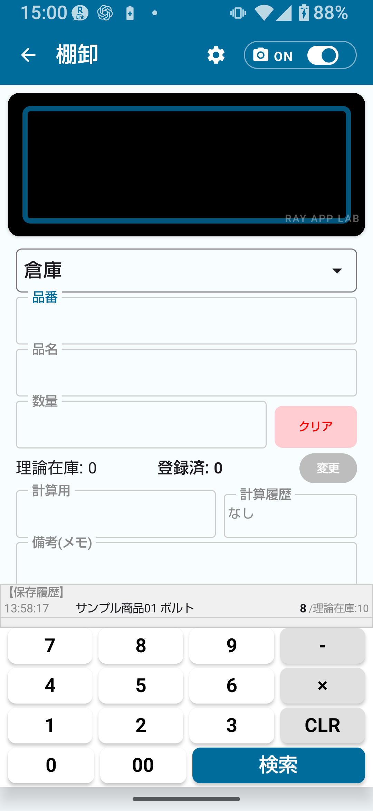

棚卸は、実際に商品を数えて在庫数を記録する作業です。無料版では基本的な棚卸作業を試すことができます。
棚卸の流れは「商品を読み取る → 数量を入力する → 保存する → 履歴を確認する」です。
💡 棚卸とは
棚卸は「実際に数えた数量（実棚）」を記録する作業です。在庫管理の入荷・出荷・移動とは別の操作です。混同しないようにしてください。
無料版でできる棚卸機能
- 商品コードまたはバーコードの入力・読み取り（標準6種類ON固定）
- 商品名の入力
- 実棚数量の入力
- メモ入力
- 棚卸履歴の確認
- 無料枠内での保存・出力（件数制限あり）

図1-1 棚卸メイン画面（無料版）
無料版では、以下の制限があります。
| 項目 | 無料版の制限 | 解除するには |
|---|
| マスタ件数 | 30件まで | 棚卸 簡単版または棚卸 フル版 |
| 棚卸履歴件数 | 30件まで | 棚卸 簡単版または棚卸 フル版 |
| エクスポート件数 | 30件まで | 棚卸 簡単版または棚卸 フル版 |
| 画面回転固定 | 利用不可 | 棚卸 簡単版以上 |
| 詳細コードルール | 利用不可 | 棚卸 フル版 |
| ロケーションコードルール | 利用不可 | 棚卸 フル版 |
| カメラ詳細設定 | 利用不可 | 棚卸 フル版 |
| CSV拡張出力 | 利用不可 | 棚卸 フル版 |
⚠ 注意
件数上限（30件）を超えると保存や出力ができなくなる場合があります。上限に近づいたら、棚卸 簡単版または棚卸 フル版への移行を検討してください。
💡 購入前の確認
価格や実際の購入条件はGoogle Playで確認してください。取扱説明書では価格を断定しません。
基本の棚卸手順
- トップ画面で「棚卸」をタップして棚卸画面を開く。
- バーコードを読み取る、または品番（商品コード）を手入力する。
- 商品名が表示される。未登録コードの場合は商品名を入力する。
- ロケーション（倉庫・店舗など）を確認または選択する。
- 実際に数えた数量（実棚）を入力する。
- 必要ならメモを入力する。
- 「保存」をタップして棚卸履歴に記録する。
- 棚卸履歴で保存内容を確認する。
🚨 重要
保存する前に数量を必ず確認してください。数量の入力ミスは在庫との差異につながります。保存後に内容を見直す場合は、アプリ画面の案内に従って操作してください。
複数商品を続けて棚卸する場合
- 1件目を保存したら、次の商品のバーコードを読み取る（または品番を入力する）。
- 手順2〜7を繰り返す。
- すべての商品を入力し終えたら、棚卸履歴で全体を確認する。
💡 ヒント
棚卸は一度にすべて完了させる必要はありません。途中でアプリを閉じても、保存済みの履歴は残ります。
図3-1 棚卸履歴画面
バーコード読み取り
カメラを起動してバーコードにかざすと自動で読み取ります。読み取りに失敗する場合は、明るい場所で行うか、手入力に切り替えてください。
品番（商品コード）の手入力
バーコードが使えない場合は、品番欄に直接商品コードを入力します。登録済みコードの場合は商品名が自動表示されます。
商品名の入力
未登録コードの場合は商品名を入力します。入力した商品名は棚卸履歴に記録されます。マスタ未登録状態での運用は件数管理に注意してください。
実棚数量の入力
実際に数えた数量（実棚）を数値で入力します。
⚠ 注意
数量は実際に数えた数を正確に入力してください。棚卸数量の誤入力は在庫差異の原因になります。保存前に必ず数値を確認してください。
メモの入力
作業メモや備考を自由に入力できます。棚卸履歴に一緒に記録されます。
| 入力項目 | 内容 | 必須/任意 |
|---|
| バーコード/品番 | 商品を識別するコード | 必須 |
| 商品名 | 未登録コードの場合に入力 | 条件付き必須 |
| ロケーション | 棚卸を行う場所 | 設定による |
| 実棚数量 | 実際に数えた数量 | 必須 |
| メモ | 備考・作業メモ | 任意 |
無料版では、簡単なロケーション運用を前提とします。基本ロケーションは「倉庫」と「店舗」です。
簡単モード別ロケーション
| 棚卸モード設定 | 使えるロケーション | 用途例 |
|---|
| 簡単A | 倉庫のみ | 倉庫だけで管理する場合 |
| 簡単B | 倉庫 + 店舗 | 倉庫と店舗の両方で棚卸する場合 |
| 簡単C | 店舗のみ | 店舗だけで管理する場合 |
棚卸モードは「設定 → 棚卸設定」で選択します。自分の運用に合ったモードを事前に設定しておくと、棚卸作業がスムーズになります。
💡 ヒント
詳細ロケーション（棚番号など細かい場所の管理）はフル解放の機能です。「詳細」モードに設定することで利用できます。
⚠ 注意
詳細ロケーションが登録されていても、設定が簡単A/B/Cのままだと表示されません。詳細モードへの切替が必要です。
保存した棚卸データは棚卸履歴から確認できます。
履歴で確認できること
- 保存日時
- 商品コード・商品名
- 入力した実棚数量
- ロケーション
- メモ
無料版の履歴上限
無料版では棚卸履歴は30件までです。上限に達した場合の挙動については、画面の案内に従ってください。継続して使用する場合は、棚卸 簡単版（1,000件まで）または棚卸 フル版（上限解除）への移行を検討してください。
⚠ 注意
無料版では履歴件数に上限（30件）があります。上限を超えると新しい棚卸データが保存できなくなる場合があります。
無料版では、CSV出力件数に上限があります。
| 項目 | 無料版 | 簡単解放 | フル解放 |
|---|
| エクスポート件数 | 30件まで | 300件まで | 上限解除 |
| 全項目出力 | 制限あり | 制限あり | CSV拡張出力 |
💡 ヒント
棚卸CSVは1行目に言語別ヘッダーが付きます。出力したCSVはExcelやGoogle スプレッドシートで開いて確認できます。
⚠ 注意
棚卸CSVには日付・時刻列やロケーション列は含まれません（棚卸合計CSV）。ロケーション別や日別の詳細出力はフル解放の機能です。
| 機能 | 必要なプラン |
|---|
| マスタ30件超の登録 | 棚卸 簡単版以上 |
| 履歴30件超の保存 | 棚卸 簡単版以上 |
| 30件超のCSV出力 | 棚卸 簡単版以上 |
| 画面回転固定 | 棚卸 簡単版以上 |
| 詳細コードルール設定 | 棚卸 フル版 |
| ロケーションコードルール設定 | 棚卸 フル版 |
| 商品コード読み取り形式の変更 | 棚卸 簡単版以上（QRは棚卸 フル版） |
| CSV拡張出力 | 棚卸 フル版 |
| 棚卸結果を在庫へ反映する操作 | 上位プラン（アプリ画面の案内に従う） |
小規模・少品目での利用
商品数が30件以内の小規模運用であれば、無料版で基本的な棚卸作業を継続できます。
定期的なCSV出力で記録を残す
履歴上限（30件）に余裕がある間に定期的にCSV出力しておくことで、記録をPCやスプレッドシートに蓄積できます。
簡単モードA/B/Cを事前に決める
「設定 → 棚卸設定」で作業に合ったモード（簡単A/B/C）を選んでおくと、毎回の棚卸作業がスムーズになります。
件数上限に近づいたら移行を検討する
マスタ・履歴が30件に近づいてきたら、棚卸 簡単版への移行を検討してください。件数が上限に達すると保存や出力ができなくなる場合があります。
💡 ヒント
まずサンプルデータ（設定から作成）で操作を練習してから、本番商品のマスタ登録を始めることをおすすめします。
📌 この章のポイント
- 無料版の棚卸は30件以内の小規模運用に適している。
- 棚卸の手順は「読み取り → 数量入力 → 保存 → 履歴確認」。
- ロケーションは簡単A/B/Cで設定。詳細ロケーションはフル解放。
- CSV出力は30件まで。出力したCSVには日付・ロケーション列は含まれない。
- 件数上限（30件）に近づいたら、棚卸 簡単版または棚卸 フル版を検討する。
- 棚卸は在庫管理の入荷・出荷とは別の作業。混同しないこと。
🔍 ご利用前の確認事項
- 保存前に、商品コード・商品名・ロケーション・数量を確認してください。
- 履歴件数が上限に近づいたら、CSV出力またはプラン変更を検討してください。
- 棚卸結果を在庫へ反映する操作は上位機能です。利用できる範囲はアプリ画面とGoogle Playの表示を確認してください。